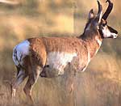

Pronghorn kids have no spots but are a uniform dun color. At three weeks of age a kid will be able to outrun a coyote. When the while rump patch is flared, it signals danger (below right). And now we come to the unique horns of the pronghorn.